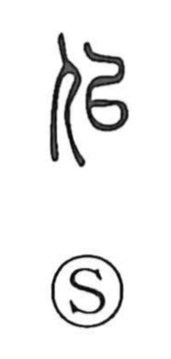

似

Uncategorized
Kun: niru, tsugu | On: ji
to resemble ・ to be like
Explanation
This is a phono-semantic character: the person radical on the left points to a human subject, while the right-hand 以 supplies the sound. In early script 以 appears in a form connected with the plowshare graph read shi, part of a sound series that in bronze forms also combines with a covenant vessel sign; related shapes surface in graphs such as 始 and 姒. In the Book of Odes (Zhou Hymns, Liang Si), the phrase 以似以續 uses 似 in the sense “to follow, to take after,” and from the notion that what succeeds resembles what precedes, the character comes to mean “to resemble, to be alike.”